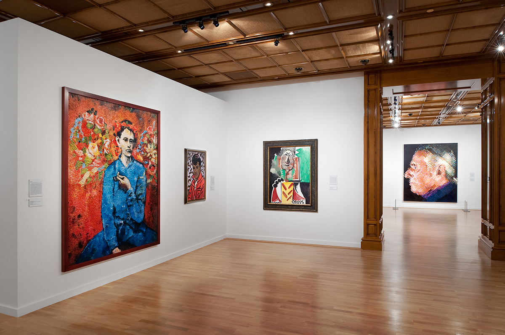
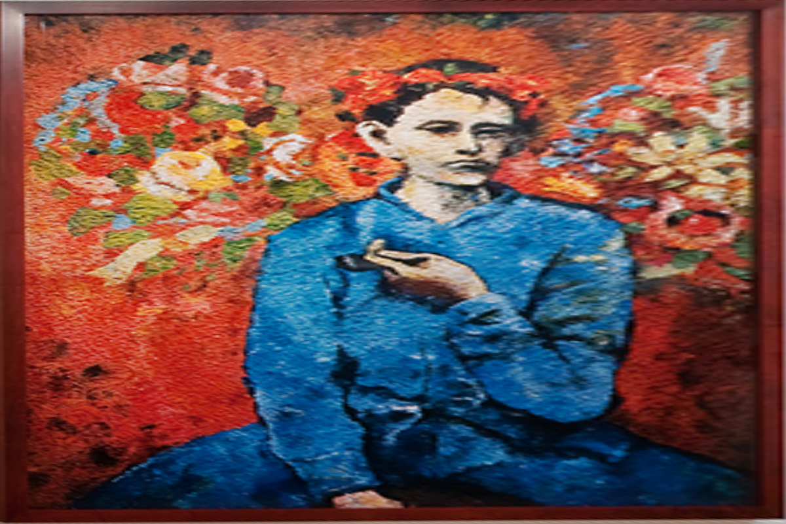
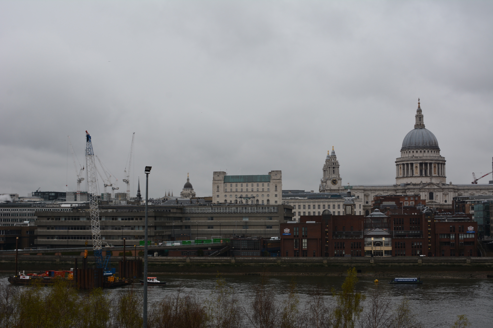
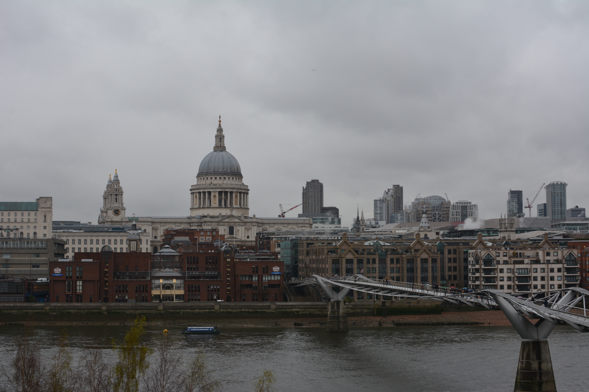
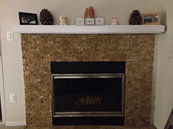
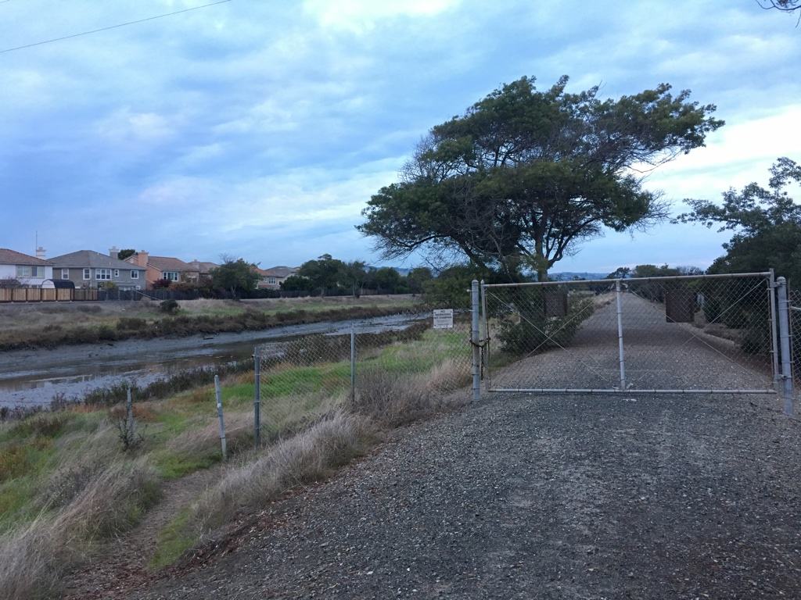
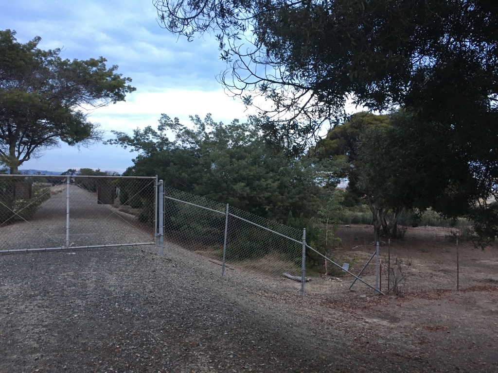

- Intro
- Vertigo
- Tilt Shift
- Summary
The Final Project
Karl Cempron: CS194-26-AEG
The purpose of this project is to explore some additional imaging techniques. In particular, I chose to attempt the vertigo shot as well as applying tilt shift effects to images.
 A classic Vertigo Shot!
A classic Vertigo Shot!
The Vertigo Shot
The Vertigo shot is a video camera effect first utilized in Alfred Hitchcock's movie Vertigo. This effect relies on changing the camera's field of view, while keeping the subject the same size within the frame. This results in a warping sensation that makes the background of the subject seem either deeper or more shallow.
To emulate the technique in still photos, I captured a series of photos, stepping back a small distance and zoomed in slightly on the subject. I then used Photoshop to align the photos more precisely.
 Candle Hall Vertigo Shot.
Candle Hall Vertigo Shot.
 Shot 1
Shot 1
 Shot 2
Shot 2
 Shot 3
Shot 3
 Shot 4
Shot 4
 Shot 5
Shot 5
 LBottle Vertigo Shot
LBottle Vertigo Shot
 Shot 1
Shot 1
 Shot 2
Shot 2
 Shot 3
Shot 3
 Shot 4
Shot 4
Image Rectification
To test the implementation of the homography matrix, we take images and rectify them using four points. The result warps the images to a new planar perspective. In the examples provided I chose to warp them into rectangular forms.
Art Gallery
Wall Painting rectified
 Edgy Sign
Edgy Sign
Rectified Edgy Sign
Image Mosaic
Finally, we warp the images so they're registered and create an image mosaic. Instead of having one picture overwrite the other, which would lead to strong edge artifacts, I use weighted averaging. For mosaics that consist of more than 2 images, I first stitch the first together and then stitch additional ones after with the resultant. The final images displayed below have been cropped to remove any unwanted backgrounds.
Left Image
Right Image
 Thames Panorama
Thames Panorama
Left Image
 Right Image
Right Image
 Fireplace Panorama
Fireplace Panorama
Left Image
 Center Image
Center Image
Right Image
 Road Panorama
Road Panorama
The Reflection
Firstly I was impressed with how it was possible to warp 1 image into another plane via a 3x3 matrix and perhaps was more surprised on how someone was able to derive such an awesome transformation. Secondly, I was surprised on how easy it is to actually make panoramic images. Though this algorithm currently requires manual selection of correspondence points, I am still thoroughly impressed by how straightforward the procedure was.